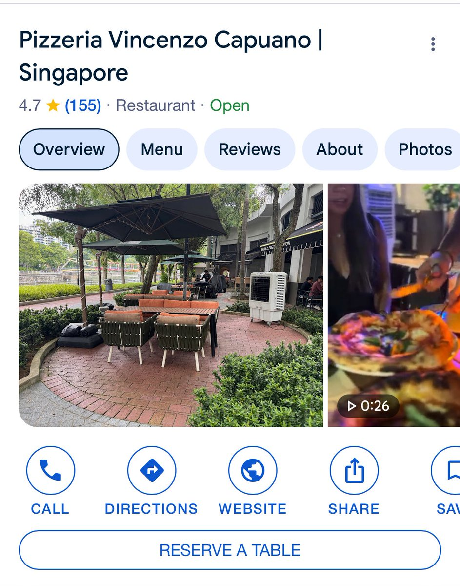

Lumi猫卷🏳️⚧️出售日雌泰补
@lumigj02
@LazySpider3 感觉排队有50%的原因是大伙喜欢排队，我是从来没见过排一半的队，要么没人排，只要有人排很快就变成一堆人排…

Lazy_Spider
@LazySpider3
昨天傍晚带娃骑车路过一个Pizza店,看到生意不错门外还有人排队，就兴冲冲停下队伍去排了一会儿被告知“tonight we are fully booked”
回来查了下review有点东西啊超多人打出五星好评，其实坡县吃这种白人饭如果不点酒，也就是个牛车水中餐小馆子的价格
立个flag改天一定去试一下 https://t.co/vvZgQ1dXEW